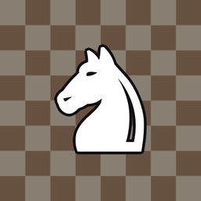

demminin chessi
Apple Watch için iki kişilik satranç
Tek bir saat üzerinde, sırayla oynanan tam kurallı satranç. Saati masaya koyun ya da karşınızdakine uzatın; hamle sırası kimdeyse o oynar.
Nasıl oynanır
- Oynamak istediğin taşa dokun; gidebileceği kareler noktayla gösterilir.
- Noktalardan birine dokununca hamle yapılır. Seçimi bırakmak için taşa tekrar dokun.
- Aşağı kaydır ya da Digital Crown'ı çevir: menüde Geri Al, Yeni Oyun, Tahtayı Çevir ve alınan taşlar var.
- "Sıraya göre çevir" açıkken tahta her hamlede sırası gelen oyuncuya döner.
Sık sorulanlar
Rok, geçerken alma ve terfi var mı?
Evet. Tüm satranç kuralları uygulanır; piyon son sıraya ulaşınca hangi taşa terfi edeceğini seçersin.
Oyun ne zaman berabere biter?
Pat, 50 hamle kuralı, mat için yetersiz taş ve aynı konumun üç kez tekrarlanması durumunda.
Uygulamayı kapatırsam oyun kaybolur mu?
Hayır. Oyun her hamlede saatine kaydedilir, kaldığın yerden devam edersin.
Bilgisayara karşı oynanabiliyor mu?
Şimdilik hayır; oyun iki kişinin aynı saatte oynaması için tasarlandı.
İletişim
Sorun, öneri ve istekler için: demirkocum7@gmail.com
Support (English)
demminin chessi is a two-player chess game for Apple Watch: pass the watch and take turns. Tap a piece to see its legal moves, tap a highlighted square to move. Swipe down or turn the Digital Crown for Undo, New Game and board flip. Contact: demirkocum7@gmail.com